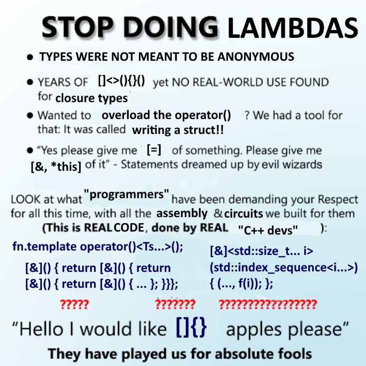

## About me * Famously hates lambdas
## Lambdas * Introduced in C++11 * The world has been worse-off ever since
## This talk is * A manifesto * A call to action
## Overview * Closure type names * Teachability * Code readability * TUs and boundaries
Closure type names
Teachability
Code readability
TUs and boundaries
Conclusion
